橙色圆圈：有简体中文故事的国家
转一转地球，选一个 NewsToons 国家！🌍
所有故事
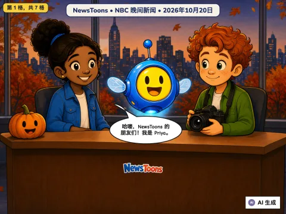
海上的大风暴，还有一架安全停下的飞机
2026-10-20
🇺🇸 来自美国 · NBC Nightly News
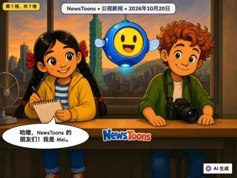
飞向火星卫星的航天器、清除病菌的机器人，还有最后一次运动会
2026-10-20
🇹🇼 来自台湾 · PTS News (公視新聞網 PNN)
湖中央的钢琴，还有两位桌上足球冠军
2026-10-20
🇩🇪 来自德国 · tagesschau, SWR, NDR
江水向北流，还有小鼠能戴的显微镜
2026-10-20
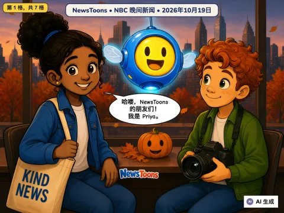
机场的消防员、闪亮的谜团，还有一顶分享的王冠
2026-10-19
🇺🇸 来自美国 · NBC Nightly News
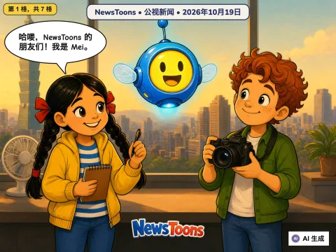
台湾准备迎接大台风，还有人帮台湾残疾人羽毛球队整理出空间
unconfirmed
🇹🇼 来自台湾 · PTS News (公視新聞)
伊德菲克斯飞向火星的卫星，还有一位热心的公交司机
2026-10-19
🇩🇪 来自德国 · tagesschau, NDR
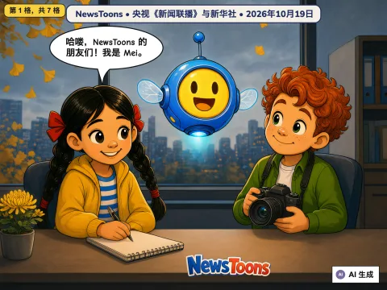
冠军的笑容、一起训练的泳将、苏州的校园足球，还有沙漠边的苹果
2026-10-19
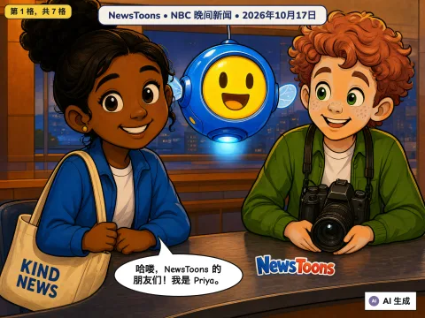
消防员帮大家回家，还有超级球迷的大日子
2026-10-17
🇺🇸 来自美国 · NBC Nightly News
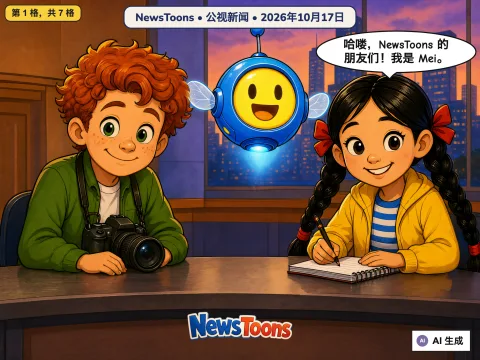
台南火车开进地下，两兄弟，两支球队
2026-10-17
🇹🇼 来自台湾 · PTS News (公視新聞)
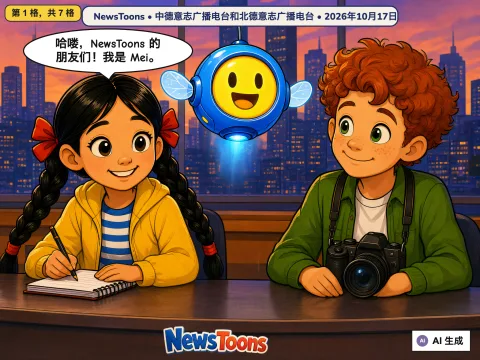
未来森林、熊的安全家园、长距离徒步和海边的风筝
2026-10-17
🇩🇪 来自德国 · MDR, NDR
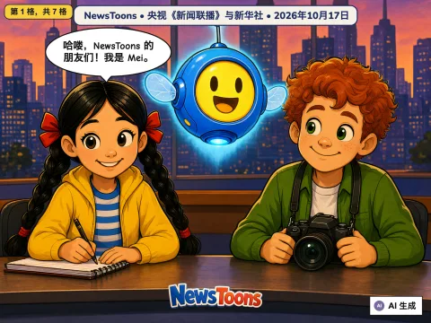
暖气提前来了，鹤群准备飞往南方
2026-10-17
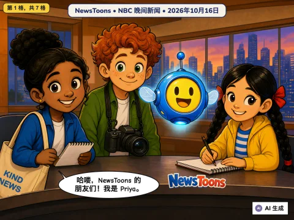
找到露露了、会跳的车和汉堡学者
2026-10-16
🇺🇸 来自美国 · NBC Nightly News
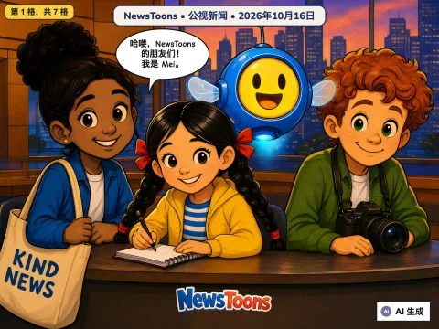
鲸鱼通报员的号角和超大棒球巨蛋
2026-10-16
🇹🇼 来自台湾 · PTS News (公視新聞)
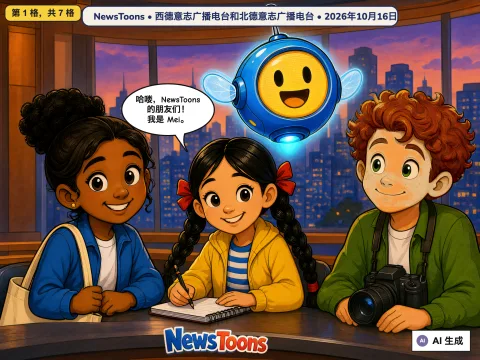
乒乓球金牌、长颈鹿宝宝、变干净的猫头鹰和贴心的公交车司机
2026-10-16
🇩🇪 来自德国 · WDR, NDR
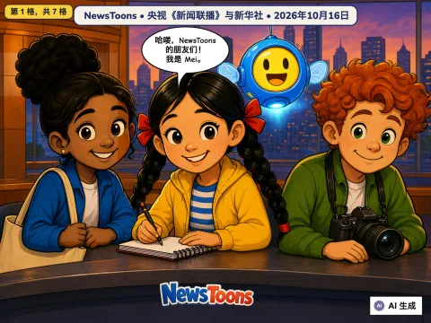
再见了，闰秒！智能粮仓和沙地里长出的树林
2026-10-16
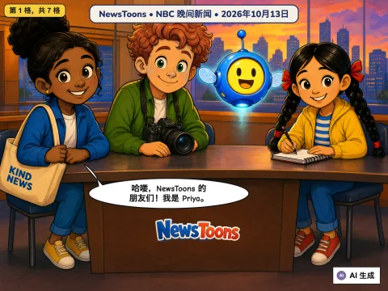
南瓜大逃亡与勇敢的哥哥
2026-10-13
🇺🇸 来自美国 · NBC 晚间新闻
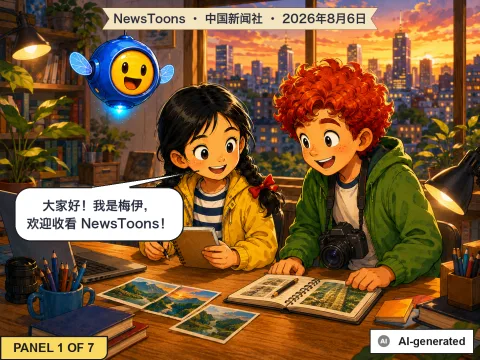
球场上的歌，火堆边的圈
2026-08-06
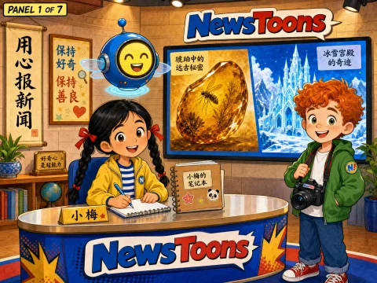
1亿年的小灯泡和夏天的冰雪城
2026-08-04
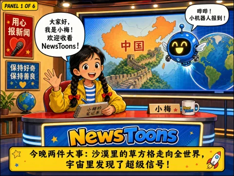
草方格和宇宙超级发射器
2026-08-03